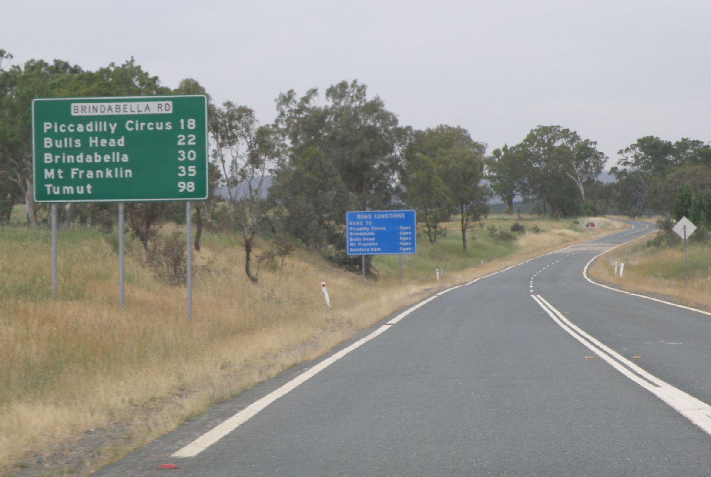
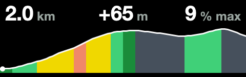
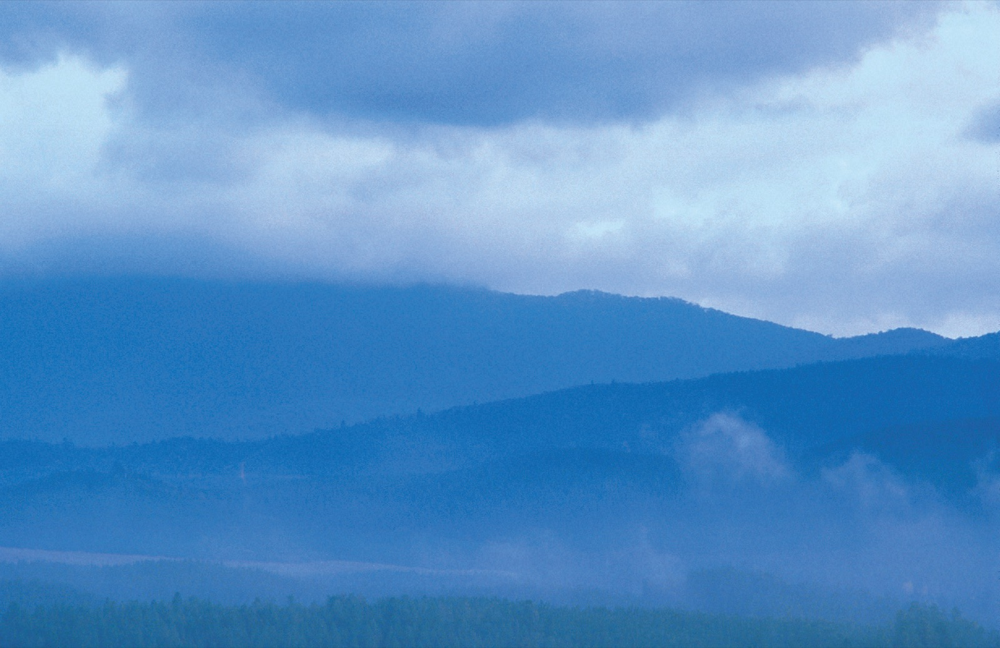

The road ahead, with no route.


Road Ahead is a free field for the Hammerhead Karoo. It draws the elevation of the road in front of you, with no route loaded.
Install on your KarooFree · no phone · no account
The next 2 km.
Tap the field on a ride and it steps between 2, 5 and 10 km. Try it here. This is Uriarra Road, drawn by the same code that runs on the Karoo. On a half-width tile it drops the numbers and shows the graph alone.
Checked on 454 km of real rides
The guess was replayed against nine recorded rides around Canberra and scored against the road then ridden. It gets the heights right and almost always fills the distance you asked for. Past a junction it is a guess, and it says so by drawing that part dimmer.
- 1.5 to 3 m
- The typical gap between the height it drew and the height the ride recorded.
- 88%
- How often the field showed the full 2 km. It was 45% when it stopped at every junction.
- 58%
- How much of the picture, on average, turned out to be the road then ridden.
First, it finds your road.
On your Karoo in four steps
It works on a Karoo 3 from your phone, so open this page there. On a computer the file is no use, unless you have a Karoo 2: that needs a cable and adb install roadahead.apk.
- Share the install file to the Hammerhead app. On your phone, press and hold any Install button on this page, choose Share, then the Hammerhead app. On the Karoo, tap Install.
- Allow map access. Open Road Ahead and tap Allow map access, then Allow. The app closes when you do, so open it again. It reads the Karoo's own offline map and writes nothing.
- Leave it on Wi-Fi for a minute. It fetches the elevation for where you are and for 30 km around. The Karoo turns Wi-Fi off on a ride, so do this at home.
- Add the field to a ride page. Profiles, your profile, Data Pages, a page, Add Field, ROAD AHEAD, Road ahead.
Questions
Know what's coming
Road Ahead is free, it takes a few minutes to set up, and then every lump on every ride shows up before you reach it.
Install on your Karoo Read the code